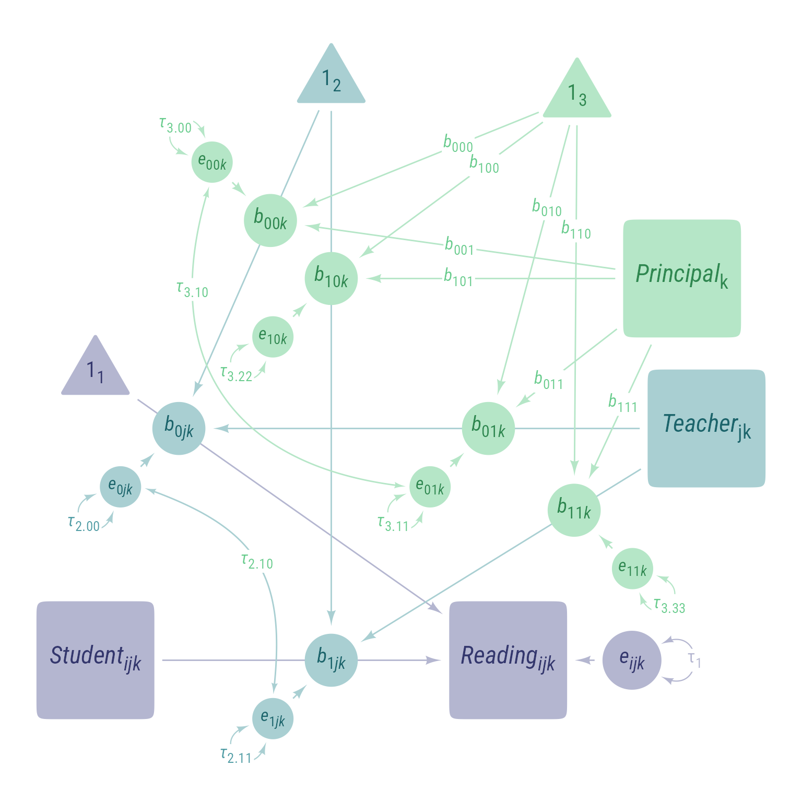
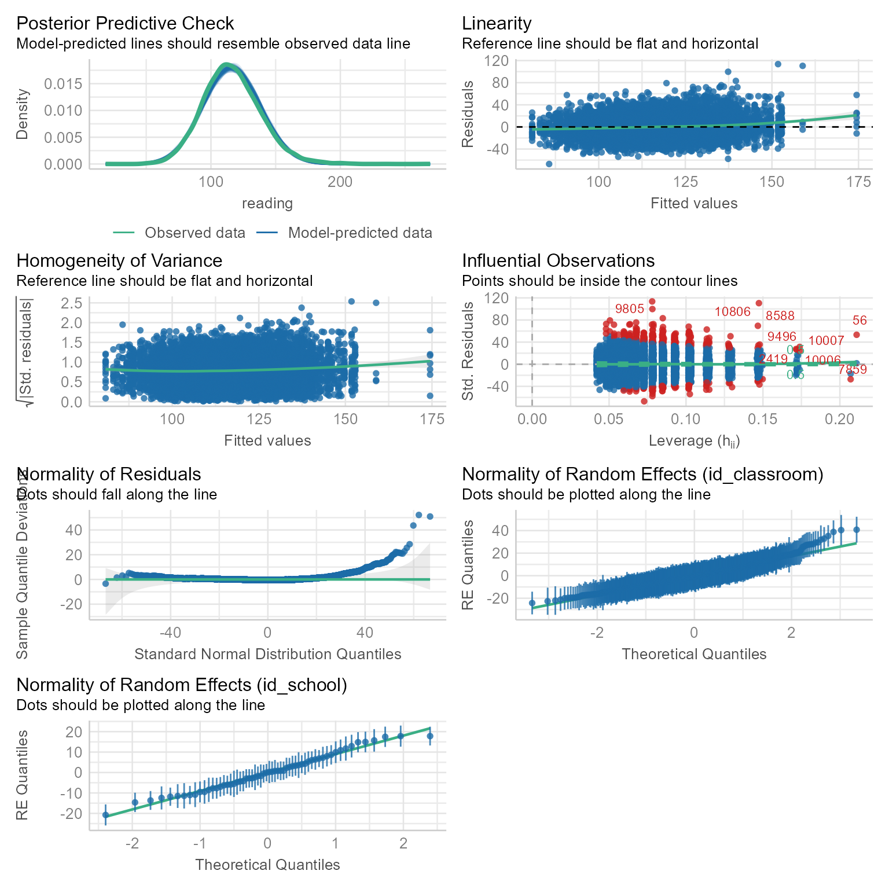
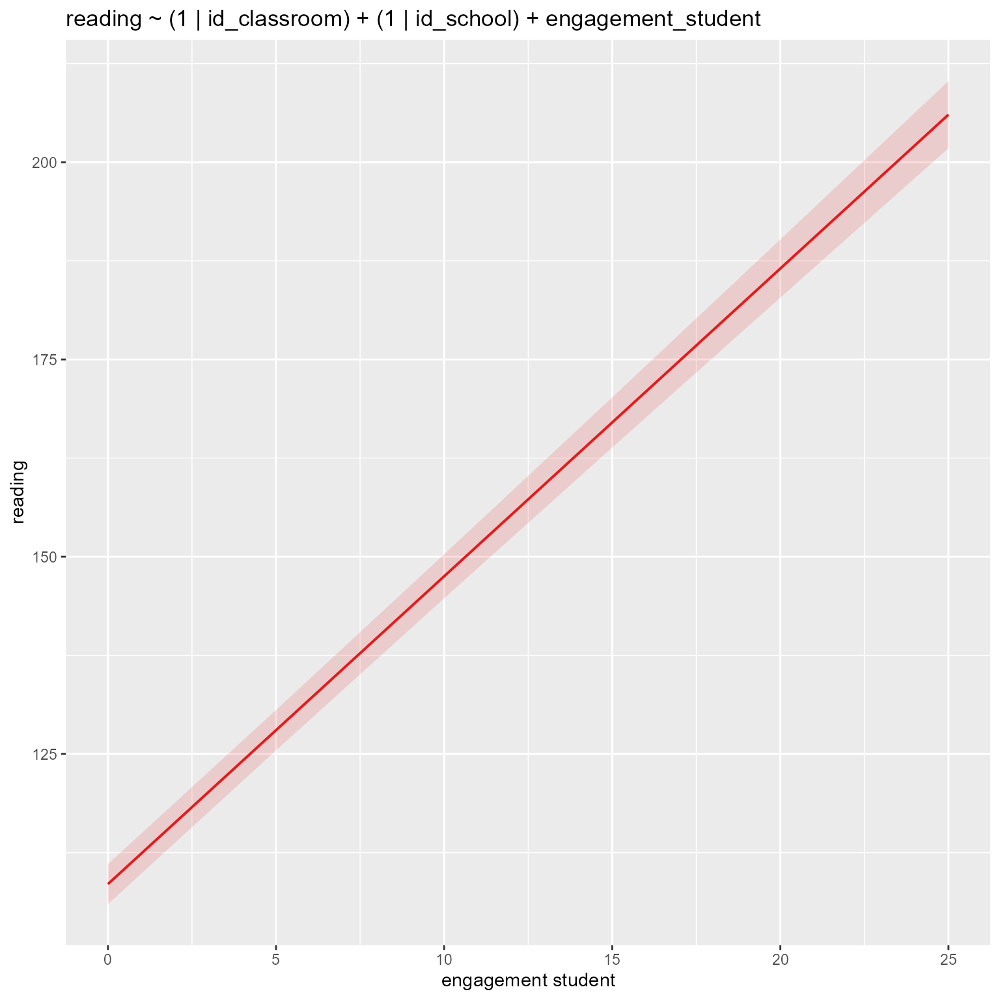
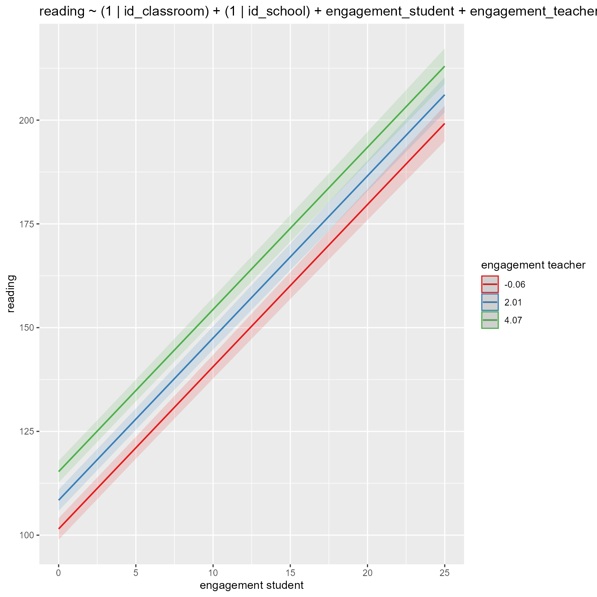
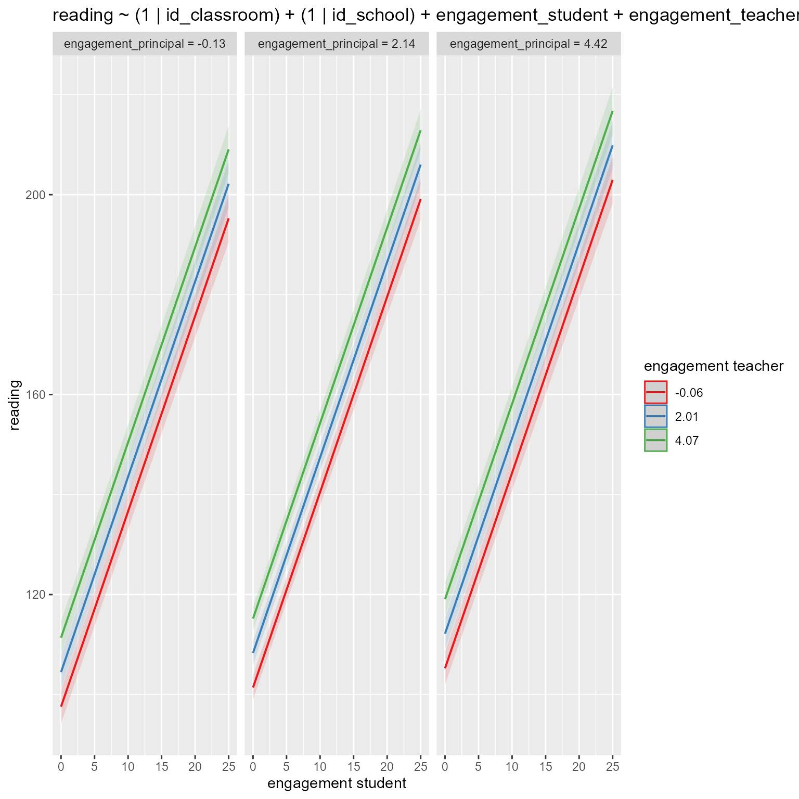

# Load packages, installing them if needed
library(tidyverse)
library(lme4)
library(broom.mixed)
library(easystats)
library(sjPlot)
library(gt)Load Packages
Study
We are evaluating the effects of a school-wide reading intervention in which principals helped teachers implement an innovative reading curriculum that helps students to read for pleasure at home and at school. Some principals were more engaged in this intervention than others. That is, some took this task seriously, spending many hours on it. Some did not. Some teachers likewise spend many classroom hours implementing the intervention whereas some teacher spent minimal time. Not surprisingly, some students were highly engaged in the intervention, spending many hours reading, and some were not.
Our outcome variable is a reading comprehension score on a standardized test. The predictor variables are principal engagement (hours per month on intervention-related activity), teaching engagement (hours per month on intervention-related activity), and student engagement (hours per week reading).
Hypotheses
- Principal, teacher, and student engagement all contribute to reading scores
- The effect on reading is particularly high when teachers and students are both highly engaged. That is, the effect of student engagement is stronger with a high-engagement teacher than with a low-engagement teacher.
- The effect on reading is also particularly high when principals and teachers are both highly engaged. That is, the effect of teacher engagement is higher when the principal is highly engaged than when the principal is not highly engaged.
Complete Model with all possible effects
The lmer formula in its most compact form will be:
Reading ~ S * T * P + (S | id2) + (S * T | id3)
That is not so bad, right? We have masked some of the model’s complexity by omitting the intercepts and using the * operator, which specifies an interaction effect along with all its lower-order terms.
In its least compact form, including the intercepts and all the lower-order terms specified with the : operator, the formula would be:
Reading ~ 1 + S + T + P + S:T + S:P + T:P + S:T:P + (1 + S | id_classroom) + (1 + S + T + S:T | id_school)
This model has
- Eight fixed coefficients:
- 1 fixed intercept:
1 - 3 fixed conditional slopes:
S,T, andP - 3 fixed conditional two-way interactions:
S:T,S:P, andT:P - 1 fixed three-way interaction:
S:T:P
- 1 fixed intercept:
- One L1 random effect (not shown in formula)
- Two L2 random effects
- 1 random intercept:
(1 | id_classroom) - 1 random slope:
(S | id_classroom)
- 1 random intercept:
- Four L3 random effects
- 1 random intercept:
(1 | id_school) - 2 random conditional slopes:
(S | id_school)and(T | id_school) - 1 random two-way interaction:
(S:T | id_school)
- 1 random intercept:
- A 2 × 2 L2 residual covariance matrix
- 2 variances (for
1andS) - 1 covariance of L2 intercept and slope (between
1andS)
- 2 variances (for
- A 4 × 4 L3 residual covariance matrix
- 4 variances (for
1,S,T, andS:T) - 6 covariances (among
1,S,T, andS:T)
- 4 variances (for
How realistic is this model? Not very! It allows every possible fixed and random effect. It allows for every possible interaction effect and every possible correlation among random effects. The probability is quite remote that everything matters and everything interacts with everything.
Not only is the model unrealistic, it is likely to have convergence problems, as well. With real data sets, the algorithms sometimes have a hard time finding the besting fitting model when many complex effects are specified. We are much better off starting with a simple model and building from there.
Nevertheless, let’s look at the complete model to help us understand what kinds of effects are possible.
Level 1 Equation
NoteNotation Change
In this tutorial, I am going to use \(b\) for both fixed and random coefficients instead of the tradition of using \(\gamma\) for fixed coefficients and \(\beta\) for random coefficients. Any coefficient that has numbers only in its subscript is fixed (e.g., \(b_{010}\)). Any coefficient that has one or more letters in its subscript is random (e.g., \(b_{0jk}\)).
In addition, I am going to further simplify the notation for residuals and variances. All residuals will be \(e\) and all variances will be \(\tau\). Their levels can be inferred from their subscripts. For example, \(\tau_1\) is the variance of the level 1 residual.
If you can ignore the subscripts, this is a simple model in which student engagement predicts reading ability:
\[ \begin{aligned} Reading_{ijk}&=b_{0jk}+b_{1jk}S_{ijk}+e_{ijk}\\ e_{ijk}&\sim\mathcal{N}(0,\tau_1) \end{aligned} \]
| Type | Symbol | Interpretation |
|---|---|---|
| Variables | \(Reading_{ijk}\) | The reading comprehension score for student \(i\) in classroom \(j\) in school \(k\). |
| \(S_{ijk}\) | Student Engagement (L1 predictor). The number of hours per week spent reading for student \(i\) in classroom \(j\) in school \(k\). | |
| Random Coefficients | \(b_{0jk}\) | L2 random intercept. In this model, \(b_{0jk}\) refers to the predicted reading score for a student in classroom \(j\) in school \(k\) who spent 0 hours per week reading. |
| \(b_{1jk}\) | L2 random slope of L1 predictor. In this model, \(b_{1jk}\) refers to the predicted effect of student engagement for a student in classroom \(j\) in school \(k\). | |
| Residuals | \(e_{ijk}\) | L1 residual. In this model, \(e_{ijk}\) refers to how much the reading comprehension score for student \(i\) in classroom \(j\) in school \(k\) differs from expectations. |
| Residual Variance | \(\tau_1\) | L1 residual variance. The variance of \(e_{ijk}\) |
Level 2 Equations
The L2 predictor, teacher engagement \(T_{jk}\), can have an effect on the L2 random intercept \(b_{0jk}\) and on the L2 random slope \(b_{1jk}\):
\[ \begin{aligned} b_{0jk}&=b_{00k} + b_{01k}T_{jk}+e_{0jk}\\ b_{1jk}&=b_{10k} + b_{11k}T_{jk}+e_{1jk}\\ \boldsymbol{e_2}&=\begin{bmatrix}e_{0jk}\\ e_{1jk}\end{bmatrix}\\ \boldsymbol{\tau_2}&=\begin{bmatrix}\tau_{2.00} & \\ \tau_{2.10} & \tau_{2.11}\end{bmatrix}\\ \boldsymbol{e_2}&\sim \mathcal{N}\left(\boldsymbol{0},\boldsymbol{\tau_2}\right) \end{aligned} \]
| Type | Symbol | Interpretation |
|---|---|---|
| Variables | \(T_{jk}\) | Teacher engagement (L2 predictor). Number of hours teacher \(j\) in school \(k\) spend on intervention-related activities. |
| Random Coefficients | \(b_{0jk}\) | L2 random intercept. In this model, \(b_{0jk}\) refers to the predicted reading score for a student in classroom \(j\) in school \(k\) who spent 0 hours per week reading. |
| \(b_{1jk}\) | L2 random slope for L1 predictor. In this model, \(b_{1jk}\) refers to the predicted effect of student engagement for a student in classroom \(j\) in school \(k\). | |
| \(b_{00k}\) | L3 random intercept. In this model, \(b_{00k}\) refers to the predicted reading score for classroom \(j\) in school \(k\) whose teacher spent 0 hours per month on intervention-related activitoes. | |
| \(b_{01k}\) | L3 random conditional slope for L2 predictor. In this model, \(b_{01k}\) refers to the effect of teacher engagement in school \(k\) when the student engagement is 0. | |
| \(b_{10k}\) | L3 random conditional slope for L1 predictor. In this model, \(b_{10k}\) refers to the effect of student engagement in school \(k\) when the teacher spends 0 hours per month on intervention-related activitoes. | |
| \(b_{11k}\) | *L3 random interaction effect for L1 and L2 predictors *. In this model, \(b_{11k}\) refers to the interaction of student and teacher engagement in school \(k\). | |
| Residuals | \(\boldsymbol{e_2}\) | The vector of L2 residuals, \(\{e_{0jk},e_{1jk} \}\) |
| \(e_{0jk}\) | Residual for L2 random intercept. In this model, \(e_{0jk}\) refers to how much the reading comprehension score for classroom \(j\) in school \(k\) differs from expectations when the teacher spent 0 hours per month on intervention-related activities. | |
| \(e_{1jk}\) | Residual for L2 random slope of L1 predictor. In this model, \(e_{1jk}\) allows the effect of student engagement to vary from class to class after accounting for teacher engagement. | |
| Residual Variance | \(\boldsymbol{\tau_2}\) | 2 × 2 covariance matrix for L2 residuals |
| \(\tau_{2.00}\) | Variance of the L2 random intercept residual, \(e_{0jk}\) | |
| \(\tau_{2.11}\) | Variance of the L2 slope residual, \(e_{1jk}\) | |
| \(\tau_{2.10}\) | Covariance of the L2 intercept and slope residuals, \(e_{0jk}\) and \(e_{1jk}\) |
Level 3 Equations
The L3 predictor, principal engagement \(P_{jk}\), can have have an effect on all four L3 random coefficients:
\[ \begin{aligned} b_{00k}&=b_{000} + b_{001}P_{k}+e_{00k}\\ b_{01k}&=b_{010} + b_{011}P_{k}+e_{01k}\\ b_{10k}&=b_{100} + b_{101}P_{k}+e_{10k}\\ b_{11k}&=b_{110} + b_{111}P_{k}+e_{11k}\\ \boldsymbol{e_3}&=\begin{bmatrix}e_{00k}\\ e_{01k}\\ e_{10k}\\ e_{11k}\end{bmatrix}\\ \boldsymbol{\tau_3}&=\begin{bmatrix} \tau_{3.00} & \\ \tau_{3.10} & \tau_{3.11}\\ \tau_{3.20} & \tau_{3.21} & \tau_{3.22}\\ \tau_{3.30} & \tau_{3.31} & \tau_{3.32} & \tau_{3.33} \end{bmatrix}\\ \boldsymbol{e_3}&\sim \mathcal{N}\left(\boldsymbol{0},\boldsymbol{\tau_3}\right) \end{aligned} \]
| Type | Symbol | Interpretation |
|---|---|---|
| Variables | \(P_{k}\) | Principal engagement (L3 predictor). Number of hours the principal in school \(k\) spend on intervention-related activities. |
| Random Coefficients | \(b_{00k}\) | L3 random intercept. In this model, \(b_{00k}\) refers to the predicted reading score for classroom \(j\) in school \(k\) whose teacher spent 0 hours per month on intervention-related activitoes. |
| \(b_{01k}\) | L3 random conditional slope of L2 predictor. In this model, \(b_{01k}\) refers to the effect of teacher engagement in school \(k\) when the student engagement is 0. | |
| \(b_{10k}\) | L3 random conditional slope of L1 predictor. In this model, \(b_{10k}\) refers to the effect of student engagement in school \(k\) when the teacher spends 0 hours per month on intervention-related activitoes. | |
| \(b_{11k}\) | L3 random interaction effect. In this model, \(b_{11k}\) refers to the interaction of student and teacher engagement in school \(k\). | |
| Fixed Coefficients | \(b_{000}\) | Fixed Intercept. In this model, \(b_{000}\) refers to the predicted reading score when student, teacher, and principal engagement is 0. |
| \(b_{001}\) | Fixed Conditional Slope of L3 predictor. In this model, \(b_{001}\) refers to the effect of principal engagement when student and teacher engagement is 0. | |
| \(b_{010}\) | Fixed Conditional Slope of L2 predictor. In this model, \(b_{010}\) refers to the effect of teacher engagement when student and principal engagement is 0. | |
| \(b_{011}\) | Fixed L2-L3 Conditional Interaction. In this model, \(b_{011}\) refers to the interaction of teacher and principal engagement when student engagement is 0. | |
| \(b_{100}\) | Fixed Conditional Slope of L1 predictor. In this model, \(b_{100}\) refers to the effect of student engagement when teacher and principal engagement is 0. | |
| \(b_{101}\) | Fixed L1-L3 Conditional Interaction. In this model, \(b_{101}\) refers to the interaction of student and principal engagement when teacher engagement is 0. | |
| \(b_{110}\) | Fixed L1-L2 Conditional Interaction. In this model, \(b_{110}\) refers to the interaction of student and principal engagement when teacher engagement is 0. | |
| \(b_{111}\) | Fixed L1-L2-L3 Interaction. In this model, \(b_{111}\) refers to the interaction of student, teacher, and principal engagement. | |
| Residuals | \(\boldsymbol{e_3}\) | The vector of L3 residuals, \(\{e_{00k},e_{01k},e_{10k},e_{11k} \}\) |
| \(e_{00k}\) | Residual for L3 intercept. In this model, \(e_{00k}\) refers to how much the reading comprehension score for school \(k\) differs from expectations when student, teacher, and principal engagement is 0. | |
| \(e_{01k}\) | Residual for random L3 conditional slope of L2 predictor. In this model, \(e_{01k}\) refers how much the conditional effect of teacher engagement (when student and principal engagement is 0) differs from expectations in school \(k\). | |
| \(e_{10k}\) | Residual for random L3 conditional slope of the L1 predictor. In this model, \(e_{10k}\) refers how much the conditional effect of student engagement (when teacher and principal engagement is 0) differs from expectations in school \(k\). | |
| \(e_{11k}\) | Residual for random L3 interaction of L1 and L2 predictors. In this model, \(e_{11k}\) refers how much the interaction of student and teacher engagement differs from expectations in school \(k\). | |
| Residual Variance | \(\boldsymbol{\tau_3}\) | 4 × 4 covariance matrix for L3 residuals |
| \(\tau_{3.00}\) | Variance of \(e_{00k}\). After controling for the L3 predictor (principal engagement), how much does the L3 intercept vary? | |
| \(\tau_{3.11}\) | Variance of \(e_{01k}\). After controling for the L3 predictor (principal engagement), how much does the L3 slope of the L2 predictor (teacher engagement) vary? | |
| \(\tau_{3.22}\) | Variance of \(e_{10k}\). After controling for the L3 predictor (principal engagement), how much does the L3 slope of the L1 predictor (student engagement) vary? | |
| \(\tau_{3.33}\) | Variance of \(e_{11k}\). After controling for the L3 predictor (principal engagement), how much does the L3 interaction of the L1–L2 predictors (student and teacher engagement) vary? | |
| \(\tau_{3.10}\) | Covariance of the \(e_{00k}\) and \(e_{01k}\). | |
| \(\tau_{3.20}\) | Covariance of the \(e_{00k}\) and \(e_{10k}\) | |
| \(\tau_{3.30}\) | Covariance of the \(e_{00k}\) and \(e_{11k}\) | |
| \(\tau_{3.10}\) | Covariance of the \(e_{01k}\) and \(e_{10k}\) | |
| \(\tau_{3.10}\) | Covariance of the \(e_{01k}\) and \(e_{11k}\) | |
| \(\tau_{3.10}\) | Covariance of the \(e_{10k}\) and \(e_{10k}\) |
Combined Equation
\[ \begin{multline} Reading_{ijk}=\underbrace{\underbrace{b_{000} + b_{001}P_{k}+e_{00k}}_{b_{00k}} + \underbrace{(b_{010} + b_{011}P_{k}+e_{01k})}_{b_{01k}}T_{jk}+e_{0jk}}_{b_{0jk}}+\\ \underbrace{(\underbrace{b_{100}+b_{101}P_k+e_{10k}}_{b_{10k}} + (\underbrace{b_{110}+b_{111}P_k+e_{11k}}_{b_{11k}})T_{jk}+e_{1jk})}_{b_{1jk}}S_{ijk}+e_{ijk}\\ ~ \end{multline} \]
Combined Fixed vs. Random Effects Equation
\[ \begin{aligned} Reading_{ijk}&= \underbrace{b_{000}}_{\text{Fixed Intercept}} +\\ &\underbrace{b_{001}P_{k}+b_{010}T_{jk} + b_{100}S_{ijk}}_{\text{Fixed Conditional Slopes}} +\\ &\underbrace{b_{110}S_{ijk}T_{jk}+b_{101}S_{ijk}P_{k}+b_{011}T_{jk}P_{k}}_{\text{Fixed Conditional 2-Way Interactions}}+\\ &\underbrace{b_{111}S_{ijk}T_{jk}P_{k}}_{\text{Fixed L1-L2-L3 Interaction}}+\\ &\underbrace{e_{00k}+e_{01k}T_{jk}+e_{10k}S_{ijk}+e_{11k}S_{ijk}T_{jk}}_{\text{L3 Random Effects}}+\\ &\underbrace{e_{0jk}+e_{1jk}S_{ijk}}_{\text{L2 Random Effects}}+\\ &\underbrace{e_{ijk}}_{\text{L1 Random Effect}} \end{aligned} \]
This last equation is equivalent to this model in R:
Reading ~
1 +
P + T + S +
S:T + T:P +
S:T:P +
(1 + T + S + S:T | id_school) +
(1 + S | id_classrom)Some helpful hints about notation:
- Terms with letters in the subscripts are random. These include variables (e.g., \(Reading_{ijk}, S_{ijk}, T_{jk}, P_k\)), residuals (e.g., \(e_{ijk}, e_{0jk}, e_{10k}\)), and random coefficients (e.g., \(b_{0jk}, b_{10k}\)).
- Random coefficients have a mix of numbers and letters in the subscripts (e.g., \(b_{0jk}, b_{10k}\)).
- Fixed coefficients have numbers only in the subscripts (e.g., \(b_{000}, b_{110}\)).
- Coefficients with numbers that are exclusively 0 are intercepts (e.g., \(b_{000}, b_{0jk}, b_{00k}\)).
- Coefficients with only 1 non-zero number are slopes (e.g., \(b_{001}, b_{010}, b_{100}, b_{1jk}, b_{01k}\)). If interaction effects involving the same variable are present in the model, these slopes are conditional slopes (AKA simple slopes).
- Coefficients with multiple non-zero numbers are interaction effects (e.g., \(b_{011}, b_{110}, b_{101},b_{111}, b_{11k}\)).
To determine the level of the variable:
- All fixed coefficients are specified at the highest level (i.e., 3 in this model)
- All variables, random coefficients, and error terms belong to the level that corresponds to the number of letters like so:
\[ \text{Level}=1+\text{Highest Level}-\text{Number of Letters in Subscript} \]
Thus, in this model, any symbol with \(ijk\) in the subscript is a level-1 variable (e.g., \(Reading_{ijk}, S_{ijk}, e_{ijk}\)).
Otherwise, any symbol with \(jk\) in the subscript belongs to level 2 . Otherwise, any symbol with \(k\) in the subscript belongs to level 3. Fixed coefficients are included in the highest level’s equations (i.e., 3).
Predictors are paired with coefficients from the next highest level or with fixed coefficients if no higher level exists. Thus,
- Level-1 predictors are paired with level-2 coefficients (e.g., \(b_{1jk}S_{ijk}\)).
- Level-2 predictors are paired with level-3 coefficients (e.g., \(b_{01k}T_{jk}\) and \(b_{11k}T_{jk}\)).
- Level-3 predictors (highest level) are paired with fixed coefficients (e.g., \(b_{001}P_{k}\), \(b_{011}P_{k}\), \(b_{101}P_{k}\), and \(b_{111}P_{k}\)).
Path Diagram
Code
myfont <- "Roboto Condensed"
library(ggdiagram)
# ggdiagram is an experimental package that can be installed
# remotes::install_github("wjschne/ggdiagram")
my_hue <- viridis::viridis(3, begin = .2, end = .7)
my_color_dark <- my_hue %>%
map2_chr(c(.2,.25, .3), tinter::darken)
my_color_light <- my_hue %>%
tinter::lighten(.4)
my_color <- my_hue %>%
tinter::lighten(.8)
line_color <- "gray30"
my_intercept <- redefault(
ob_ngon,
radius = .7,
angle = 90,
fill = my_color_light[1],
color = NA,
label = "1~1~",
vertex_radius = unit(0.5, "mm")
)
my_path <- redefault(connect, resect = 2, color = my_color_light[3])
my_error <- redefault(ob_circle,
radius = .5,
color = NA,
fill = my_color_light[1])
my_error_variance <- redefault(
ob_variance,
resect = 1,
linewidth = .4,
theta = 60,
looseness = 1.5,
where = "right",
color = my_color[3]
)
my_path_label <- redefault(
ob_label,
size = 13,
angle = 0,
position = .45,
label.padding = margin(1, 1, 1, 1),
color = my_color[3]
)
my_coefficient <- redefault(ob_circle,
radius = .45,
fill = my_color_light[3],
color = NA)
my_coefficient_label <- redefault(ob_label, fill = NA, color = my_color_dark[3], size = 15)
my_residual <- redefault(ob_circle,
radius = .35,
fill = my_color_light[3],
color = NA)
my_residual_label <- redefault(ob_label, size = 13, fill = NA, color = my_color_dark[3])
my_residual_variance <- redefault(
ob_variance,
resect = 1,
linewidth = .4,
theta = 60,
looseness = 2,
where = "right",
color = my_color_light[3]
)
my_residual_variance_label <- redefault(
ob_label,
size = 13,
label.padding = margin(l = 1, r = 1, t = 1, b = 1),
position = .5,
color = my_color[3]
)
my_observed <- redefault(
ob_ellipse,
m1 = 18,
color = NA,
fill = my_color_light[1])
my_observed_label <- redefault(ob_label,
size = 18,
fill = NA,
color = my_color_dark[1])
ggdiagram(myfont, font_size = 16) +
{read <- my_observed(label = my_observed_label("*Reading*~*ijk*~"))} +
{S <- my_observed(label = my_observed_label("*Student*~*ijk*~")) %>%
place(read, "left", 5)} +
{S2read <- my_path(S, read, color = my_color_light[1])} +
{b_1jk <- my_coefficient(
fill = my_color_light[2],
center = midpoint(S2read, position = .6),
label = my_coefficient_label("*b*~1*jk*~", color = my_color_dark[2]))} +
{i_1 <- my_intercept(label = ob_label(
"1~1~",
fill = NA,
color = my_color_dark[1])) %>%
place(S, "above", 3.5)} +
{i12read <- my_path(i_1@vertices[3], read, color = my_color_light[1])} +
{b_0jk <- my_coefficient(
fill = my_color_light[2],
center = midpoint(i12read, position = .15),
label = my_coefficient_label("*b*~0*jk*~", color = my_color_dark[2]))} +
{i_2 <- my_intercept(
fill = my_color_light[2],
label = ob_label(
"1~2~",
fill = NA,
color = my_color_dark[2])) %>%
place(b_1jk, degree(90), 9)} +
{i22b0jk <- my_path(
i_2,
b_0jk,
color = my_color_light[2])} +
{b_00k <- my_coefficient(center = midpoint(i22b0jk, position = .39),
label = my_coefficient_label("*b*~00*k*~"))} +
{i22b0jk <- my_path(
i_2,
b_1jk,
color = my_color_light[2])} +
{T_jk <- my_observed(label = my_observed_label("*Teacher*~jk~", color = my_color_dark[2]), fill = my_color_light[2]) %>% place(b_0jk, "right", 7.5) } +
{T2b0jk <- my_path(T_jk, b_0jk, color = my_color_light[2])} +
{T2b1jk <- my_path(T_jk, b_1jk, color = my_color_light[2])} +
{b_11k <- my_coefficient(
center = midpoint(T2b1jk, position = .25),
label = my_coefficient_label("*b*~11*k*~"))} +
{b_01k <- my_coefficient(center = intersection(T2b0jk, ob_segment(b_00k@center, b_11k@center)),
label = my_coefficient_label("*b*~01*k*~"))} +
{b_10k <- my_coefficient(center = intersection(i22b0jk, ob_segment(b_00k@center, b_11k@center)),
label = my_coefficient_label("*b*~10*k*~"))} +
{P_k <- my_observed(label = my_observed_label("*Principal*~k~", color = my_color_dark[3]), fill = my_color_light[3]) %>% place(b_10k, "right", 4.5) } +
{i_3 <- my_intercept(
fill = my_color_light[3],
label = ob_label(
"1~3~",
fill = NA,
color = my_color_dark[3])) %>%
place(P_k, degree(120), 2)} +
{i32b00k <- my_path(
i_3,
b_00k,
label = my_path_label("*b*~000~", position = .35))} +
{i32b10k <- my_path(
i_3,
b_10k,
label = my_path_label("*b*~100~", position = .33))} +
{i32b01k <- my_path(
i_3,
b_01k,
label = my_path_label("*b*~010~", position = .32))} +
{i32b11k <- my_path(
i_3,
b_11k,
label = my_path_label("*b*~110~", position = .31))} +
{Pk2b00k <- my_path(
P_k,
b_00k,
label = my_path_label("*b*~001~", position = .5))} +
{Pk2b10k <- my_path(
P_k,
b_10k,
label = my_path_label("*b*~101~", position = .62))} +
{Pk2b01k <- my_path(
P_k,
b_01k,
label = my_path_label("*b*~011~", position = .65))} +
{Pk2b11k <- my_path(
P_k,
b_11k,
label = my_path_label("*b*~111~", position = .45))} +
{e_ijk <- my_error(label = ob_label("*e*~*ijk*~", color = my_color_dark[1], fill = NA)) %>%
place(read, "right", .6)} +
my_path(e_ijk, read, color = my_color_light[1]) +
{e_ijk_var <- my_error_variance(e_ijk, color = my_color_light[1], label = my_residual_variance_label("τ~1~", color = my_color_light[1]))} +
{e_0jk <- my_residual(label = my_residual_label("*e*~0*jk*~", color = my_color_dark[2]), fill = my_color_light[2]) %>%
place(b_0jk, degree(225), .6)} +
my_residual_variance(
e_0jk,
degree(225),
color = my_color_light[2],
label = my_residual_variance_label("*τ*<sub>2.00</sub>", color = my_color[2])
) +
my_path(e_0jk, b_0jk, color = my_color_light[2]) +
{e_1jk <- my_residual(label = my_residual_label("*e*~1*jk*~", color = my_color_dark[2]), fill = my_color_light[2]) %>%
place(b_1jk, degree(225), .6)} +
my_residual_variance(
e_1jk,
degree(225),
color = my_color_light[2],
label = my_residual_variance_label("*τ*<sub>2.11</sub>", color = my_color[2])
) +
my_path(e_1jk, b_1jk, color = my_color_light[2]) +
{e_00k <- my_residual(label = my_residual_label("*e*~00*k*~")) %>%
place(b_00k, degree(135), .6)} +
my_residual_variance(
e_00k,
degree(135),
label = my_residual_variance_label("*τ*<sub>3.00</sub>")
) +
my_path(e_00k, b_00k) +
{e_10k <- my_residual(label = my_residual_label("*e*~10*k*~")) %>%
place(b_10k, degree(225), .6)} +
my_residual_variance(
e_10k,
degree(225),
label = my_residual_variance_label("*τ*<sub>3.22</sub>")
) +
my_path(e_10k, b_10k) +
{e_01k <- my_residual(label = my_residual_label("*e*~01*k*~")) %>%
place(b_01k, degree(225), .6)} +
my_residual_variance(
e_01k,
degree(225),
label = my_residual_variance_label("*τ*<sub>3.11</sub>")
) +
my_path(e_01k, b_01k) +
{e_11k <- my_residual(label = my_residual_label("*e*~11*k*~")) %>%
place(b_11k, degree(-45), .6)} +
my_residual_variance(
e_11k,
degree(-45),
label = my_residual_variance_label("*τ*<sub>3.33</sub>")
) +
my_path(e_11k, b_11k) +
ob_covariance(
e_0jk@point_at("east"),
e_1jk@point_at("north"),
label = my_path_label("*τ*<sub>2.10</sub>", position = .5),
length_head = 5,
length_fins = 5,
size = .5,
looseness = 1,
bend = -6,
resect = 1,
color = my_color_light[2]
) +
ob_covariance(
e_01k@point_at("west"),
e_00k@point_at(265),
label = my_path_label("*τ*<sub>3.10</sub>", position = .75),
length_head = 5,
length_fins = 5,
size = .5,
looseness = 1,
bend = 6,
resect = 1,
color = my_color_light[3]
) 
Import Data and Transform Variables
Here we import the data using read_csv, then we convert the L2 identifier variable id_classroom and the L3 identifier variable id_school into factors. At this point we would normally center our predictors. However, our engagement predictors are measured in hours, which is a ratio-level variable. In ratio variables, 0 indicates the absence of the quantity being measured. The whole point of centering variables is, if you can forgive the pun, to make zero meaningful (i.e., 0 = mean). Here, the 0 already has a clear meaning (0 = no engagement), and thus we need not transform the predictors.
d <- read_csv("https://github.com/wjschne/EDUC5529/raw/master/hw5_three_level.csv") %>%
mutate(id_classroom = factor(id_classroom),
id_school = factor(id_school))Null Models
1-Level Fixed Intercept Model
This is not much of a model. We use this model solely as a null hypothesis against which to contrast the next model. It posits an overall fixed intercept, \(b_{000}\), and every person deviates from it.
\[ Reading_{ijk}=\underbrace{\underbrace{b_{000}}_{b_{00k}}}_{b_{0jk}}+e_{ijk} \]
2-Level Random Intercept Model
In this model, each class has an intercept, \(b_{0jk}\). It posits an overall fixed intercept, \(b_{000}\), and every person deviates from it.
\[ Reading_{ijk}=\underbrace{\underbrace{b_{000}}_{b_{00k}}+e_{0jk}}_{b_{0jk}}+e_{ijk} \]
3-Level Random Intercept Model
\[ Reading_{ijk}=\underbrace{\underbrace{b_{000}+e_{00k}}_{b_{00k}}+e_{0jk}}_{b_{0jk}}+e_{ijk} \]
We can test to see if there is sufficient variability in Reading at level 2 and at level three to justify a level-2 and/or level-3 model.
In the code below, we create a level-1 null model with the lm function, specifying just a a fixed intercept. Then we specify a level-2 null model with just classroom intercepts and a level-3 null model with classroom and school intercepts.
# Level-1 null model
m_null_1 <- lm(reading ~ 1, data = d)
# Level-2 null model
m_null_2 <- lmer(reading ~ 1 + (1 | id_classroom), data = d)
summary(m_null_2)Linear mixed model fit by REML ['lmerMod']
Formula: reading ~ 1 + (1 | id_classroom)
Data: d
REML criterion at convergence: 104515
Scaled residuals:
Min 1Q Median 3Q Max
-3.782 -0.638 -0.040 0.594 6.240
Random effects:
Groups Name Variance Std.Dev.
id_classroom (Intercept) 191 13.8
Residual 312 17.7
Number of obs: 11914, groups: id_classroom, 1191
Fixed effects:
Estimate Std. Error t value
(Intercept) 116.363 0.435 268# Level-2 null model
m_null_3 <- lmer(reading ~ 1 + (1 | id_classroom) + (1 | id_school), d)
summary(m_null_3)Linear mixed model fit by REML ['lmerMod']
Formula: reading ~ 1 + (1 | id_classroom) + (1 | id_school)
Data: d
REML criterion at convergence: 104107
Scaled residuals:
Min 1Q Median 3Q Max
-3.796 -0.640 -0.042 0.587 6.430
Random effects:
Groups Name Variance Std.Dev.
id_classroom (Intercept) 105.2 10.26
id_school (Intercept) 89.3 9.45
Residual 312.0 17.66
Number of obs: 11914, groups: id_classroom, 1191; id_school, 60
Fixed effects:
Estimate Std. Error t value
(Intercept) 116.19 1.27 91.5# Compare both null models
# This will fail if m_null_1 is listed first.
# Set refit to FALSE because we are comparing models with different random effects
anova(m_null_3, m_null_2, m_null_1, refit = FALSE)Data: d
Models:
m_null_1: reading ~ 1
m_null_2: reading ~ 1 + (1 | id_classroom)
m_null_3: reading ~ 1 + (1 | id_classroom) + (1 | id_school)
npar AIC BIC logLik deviance Chisq Df Pr(>Chisq)
m_null_1 2 107884 107898 -53940 107880
m_null_2 3 104521 104543 -52257 104515 3365 1 <2e-16 ***
m_null_3 4 104115 104144 -52053 104107 408 1 <2e-16 ***
---
Signif. codes: 0 '***' 0.001 '**' 0.01 '*' 0.05 '.' 0.1 ' ' 1We can see in the Pr(>Chisq) column that the difference is significant for both comparisons, meaning that the level-2 and level-3 models are justified.
Check Assumptions
The normality assumption holds at all levels. That is, all random variables, at all levels, should be normal.
First, let’s just look at the density plot:
check_model(m_null_3)
The level-2 and level-3 intercepts look a little positively skewed. However, this level of non-normality is not usually fatal to the model.
Lets check the assumptions again after we have added our fixed effects to the model.
Fixed-Effects Models
Level 1 Predictors
Let’s add our L1 predictor first.
m_1_L1fixed <- update(m_null_3, . ~ . + engagement_student)First, we need a new function that will compute variance reduction.
WarningWarning!
Variance reduction does not always behave as it does in ordinary least squares. Think carefully about what is happening. Sometimes the variance reduction will be negative, meaning that the new variances are larger than the old variances. This does not necessarily mean that the new model is worse.
In general, do not interpret variance reduction when models have different random slopes structure [@mccoachMultilevelModelSelection2022, 70].
# Let's make a function that automates the process of computing variance reduction
# This function will find which random components the 2 models have in common and compares them.
# Any non-shared variance components will be omitted.
variance_reduction <- function(model_new, model_old) {
bind_rows(
as.data.frame(VarCorr(model_new), order = "lower.tri") %>%
mutate(model = "New Model"),
as.data.frame(VarCorr(model_old), order = "lower.tri") %>%
mutate(model = "Old Model")) %>%
select(-sdcor) %>%
mutate(model = factor(model, levels = c("New Model", "Old Model"))) %>%
arrange(grp, var1, var2, model) %>%
group_by(grp, var1, var2) %>%
mutate(n = n()) %>%
filter(n > 1) %>%
ungroup() %>%
select(-n) %>%
pivot_wider(names_from = model, values_from = vcov) %>%
unite(term, var1, var2, na.rm = T) %>%
mutate(`Variance Reduction` = (`Old Model` - `New Model`) / `Old Model`,
term = ifelse(grp == "Residual", "Level 1 Variance", term) %>%
str_replace("\\(Intercept\\)", "Intercept"))
}We are going to want a bunch of things every time we get a new model.
- An assumption check plot (optional)
- An automatic interpretation report
- A summary of the model, preferably in a nice table
- A plot of the fixed effects
- A test of conditional slopes, if the model has interactions.
- A statistical test of difference of the new model with a previous model
- A statistical comparison of performance metrics from the new and previous models
- Variance reduction statistics for the new model compared to a previous model
The easiest way to get all this with only minimal fussing with code is to specify the old and new models each time like this:
m_old <- m_null_3
m_new <- m_1_L1fixed
checkassumptions = FALSE # Set to TRUE if you want the check assumptions.Then run the following code:
# Check assumptions if checkassumptions is TRUE
if (checkassumptions) {
performance::check_model(m_new)
}
# Tabular display of new model
sjPlot::tab_model(m_new, show.std = TRUE)
# Automated report of new model
report::report(m_new, include_effectsize = T)
# Plot fixed effects in new model
if (!is.null(insight::find_predictors(m_new)$conditional)) {
sjPlot::plot_model(m_new,
type = "pred",
title = deparse1(as.formula(m_new)),
terms = insight::find_predictors(m_new)$conditional
)
}
# Test simple slopes, if interactions are present
if (!is.null(insight::find_interactions(m_new))) {
reghelper::reghelper(m_new)
}
# Test comparison
anova(m_old, m_new) %>%
gt::gt(caption = "Test Model difference") %>%
gt::fmt_number() %>%
gt::sub_missing(missing_text = "")
# Compare fixed parameters with unstandardized (b) and standardized (beta) coefficients
tab_model(m_old, m_new,
title = "Model Comparison",
show.std = TRUE,
show.ci = FALSE,
show.aic = TRUE,
string.est = "b",
string.std = "β")
# Variance reduction
variance_reduction(m_new, m_old) %>%
gt(caption = "Variance Reduction") If you want an easy way to run a lot of code repeatedly without making a function, you can “re-use” a previous code chunk. This way, if you make changes, you do so in one location only. The chunk with re-usable code was called compare2models. We can run it again by enclosing the code chunk name in brackets like so:
m_old <- m_null_3
m_new <- m_1_L1fixed
<<compare2models>>When rendered, this chunk will expand to have the compare2models code copied into the chunk like so:
m_old <- m_null_3
m_new <- m_1_L1fixed
# Check assumptions if checkassumptions is TRUE
if (checkassumptions) {
performance::check_model(m_new)
}
# Tabular display of new model
sjPlot::tab_model(m_new, show.std = TRUE)
# Automated report of new model
report::report(m_new, include_effectsize = T)
# Plot fixed effects in new model
if (!is.null(insight::find_predictors(m_new)$conditional)) {
sjPlot::plot_model(m_new,
type = "pred",
title = deparse1(as.formula(m_new)),
terms = insight::find_predictors(m_new)$conditional
)
}
# Test simple slopes, if interactions are present
if (!is.null(insight::find_interactions(m_new))) {
reghelper::reghelper(m_new)
}
# Test comparison
anova(m_old, m_new) %>%
gt::gt(caption = "Test Model difference") %>%
gt::fmt_number() %>%
gt::sub_missing(missing_text = "")
# Compare fixed parameters with unstandardized (b) and standardized (beta) coefficients
tab_model(m_old, m_new,
title = "Model Comparison",
show.std = TRUE,
show.ci = FALSE,
show.aic = TRUE,
string.est = "b",
string.std = "β")
# Variance reduction
variance_reduction(m_new, m_old) %>%
gt(caption = "Variance Reduction") However, this will give you a ton of output at once, which is fine for a rendered document but is cumbersome for interactive sessions. When you are first running the analyses, I recommend just copying the code and running the parts you want to see. Later, you can run the whole compare2models chunk for the rendered document, if desired.
Now let’s run the code and see what happens:
m_old <- m_null_3
m_new <- m_1_L1fixed
# Check assumptions if checkassumptions is TRUE
if (checkassumptions) {
performance::check_model(m_new)
}
# Tabular display of new model
sjPlot::tab_model(m_new, show.std = TRUE)| reading | |||||
|---|---|---|---|---|---|
| Predictors | Estimates | std. Beta | CI | standardized CI | p |
| (Intercept) | 108.51 | -0.00 | 105.97 – 111.04 | -0.11 – 0.11 | <0.001 |
| engagement student | 3.90 | 0.35 | 3.75 – 4.05 | 0.33 – 0.36 | <0.001 |
| Random Effects | |||||
| σ2 | 251.47 | ||||
| τ00 id_classroom | 106.28 | ||||
| τ00 id_school | 92.00 | ||||
| ICC | 0.44 | ||||
| N id_classroom | 1191 | ||||
| N id_school | 60 | ||||
| Observations | 11914 | ||||
| Marginal R2 / Conditional R2 | 0.118 / 0.507 | ||||
# Automated report of new model
report::report(m_new, include_effectsize = T) We fitted a linear mixed model (estimated using REML and nloptwrap optimizer)
to predict reading with engagement_student (formula: reading ~
engagement_student). The model included id_classroom as random effects
(formula: list(~1 | id_classroom, ~1 | id_school)). The model's total
explanatory power is substantial (conditional R2 = 0.51) and the part related
to the fixed effects alone (marginal R2) is of 0.12. The model's intercept,
corresponding to engagement_student = 0, is at 108.51 (95% CI [105.97, 111.04],
t(11909) = 83.85, p < .001). Within this model:
- The effect of engagement student is statistically significant and positive
(beta = 3.90, 95% CI [3.75, 4.05], t(11909) = 51.27, p < .001; Std. beta =
0.35, 95% CI [0.33, 0.36])
Standardized parameters were obtained by fitting the model on a standardized
version of the dataset. 95% Confidence Intervals (CIs) and p-values were
computed using a Wald t-distribution approximation.# Plot fixed effects in new model
if (!is.null(insight::find_predictors(m_new)$conditional)) {
sjPlot::plot_model(m_new,
type = "pred",
title = deparse1(as.formula(m_new)),
terms = insight::find_predictors(m_new)$conditional
)
}
# Test simple slopes, if interactions are present
if (!is.null(insight::find_interactions(m_new))) {
reghelper::reghelper(m_new)
}
# Test comparison
anova(m_old, m_new) %>%
gt::gt(caption = "Test Model difference") %>%
gt::fmt_number() %>%
gt::sub_missing(missing_text = "")| npar | AIC | BIC | logLik | deviance | Chisq | Df | Pr(>Chisq) |
|---|---|---|---|---|---|---|---|
| 4.00 | 104,117.09 | 104,146.63 | −52,054.54 | 104,109.09 | |||
| 5.00 | 101,759.69 | 101,796.62 | −50,874.85 | 101,749.69 | 2,359.39 | 1.00 | 0.00 |
Test Model difference
# Compare fixed parameters with unstandardized (b) and standardized (beta) coefficients
tab_model(m_old, m_new,
title = "Model Comparison",
show.std = TRUE,
show.ci = FALSE,
show.aic = TRUE,
string.est = "b",
string.std = "β")| reading | reading | |||||
|---|---|---|---|---|---|---|
| Predictors | b | β | p | b | β | p |
| (Intercept) | 116.19 | -0.00 | <0.001 | 108.51 | -0.00 | <0.001 |
| engagement student | 3.90 | 0.35 | <0.001 | |||
| Random Effects | ||||||
| σ2 | 312.04 | 251.47 | ||||
| τ00 | 105.17 id_classroom | 106.28 id_classroom | ||||
| 89.34 id_school | 92.00 id_school | |||||
| ICC | 0.38 | 0.44 | ||||
| N | 1191 id_classroom | 1191 id_classroom | ||||
| 60 id_school | 60 id_school | |||||
| Observations | 11914 | 11914 | ||||
| Marginal R2 / Conditional R2 | 0.000 / 0.384 | 0.118 / 0.507 | ||||
| AIC | 104114.778 | 101760.677 | ||||
Model Comparison
# Variance reduction
variance_reduction(m_new, m_old) %>%
gt(caption = "Variance Reduction") | grp | term | New Model | Old Model | Variance Reduction |
|---|---|---|---|---|
| Residual | Level 1 Variance | 251 | 312.0 | 0.1941 |
| id_classroom | Intercept | 106 | 105.2 | -0.0105 |
| id_school | Intercept | 92 | 89.3 | -0.0298 |
Variance Reduction
\[ \begin{aligned} \operatorname{reading}_{i} &\sim N \left(\alpha_{j[i],k[i]}, \sigma^2 \right) \\ \alpha_{j} &\sim N \left(\mu_{\alpha_{j}}, \sigma^2_{\alpha_{j}} \right) \text{, for id\_classroom j = 1,} \dots \text{,J} \\ \alpha_{k} &\sim N \left(\mu_{\alpha_{k}}, \sigma^2_{\alpha_{k}} \right) \text{, for id\_school k = 1,} \dots \text{,K} \end{aligned} \]
There was a lot going on in that output, but it is clear that engagement_student is a significant predictor of reading.
Level 2 Predictors
Now let’s add the L2 predictor, engagement_teacher:
m_2_L2fixed <- update(m_1_L1fixed, . ~ . + engagement_teacher)
m_old <- m_1_L1fixed
m_new <- m_2_L2fixed
# Check assumptions if checkassumptions is TRUE
if (checkassumptions) {
performance::check_model(m_new)
}
# Tabular display of new model
sjPlot::tab_model(m_new, show.std = TRUE)| reading | |||||
|---|---|---|---|---|---|
| Predictors | Estimates | std. Beta | CI | standardized CI | p |
| (Intercept) | 101.70 | -0.01 | 99.10 – 104.31 | -0.12 – 0.11 | <0.001 |
| engagement student | 3.91 | 0.35 | 3.76 – 4.06 | 0.33 – 0.36 | <0.001 |
| engagement teacher | 3.34 | 0.31 | 3.08 – 3.60 | 0.28 – 0.33 | <0.001 |
| Random Effects | |||||
| σ2 | 251.33 | ||||
| τ00 id_classroom | 57.74 | ||||
| τ00 id_school | 96.06 | ||||
| ICC | 0.38 | ||||
| N id_classroom | 1191 | ||||
| N id_school | 60 | ||||
| Observations | 11914 | ||||
| Marginal R2 / Conditional R2 | 0.209 / 0.509 | ||||
# Automated report of new model
report::report(m_new, include_effectsize = T) We fitted a linear mixed model (estimated using REML and nloptwrap optimizer)
to predict reading with engagement_student and engagement_teacher (formula:
reading ~ engagement_student + engagement_teacher). The model included
id_classroom as random effects (formula: list(~1 | id_classroom, ~1 |
id_school)). The model's total explanatory power is substantial (conditional R2
= 0.51) and the part related to the fixed effects alone (marginal R2) is of
0.21. The model's intercept, corresponding to engagement_student = 0 and
engagement_teacher = 0, is at 101.70 (95% CI [99.10, 104.31], t(11908) = 76.45,
p < .001). Within this model:
- The effect of engagement student is statistically significant and positive
(beta = 3.91, 95% CI [3.76, 4.06], t(11908) = 51.68, p < .001; Std. beta =
0.35, 95% CI [0.33, 0.36])
- The effect of engagement teacher is statistically significant and positive
(beta = 3.34, 95% CI [3.08, 3.60], t(11908) = 25.51, p < .001; Std. beta =
0.31, 95% CI [0.28, 0.33])
Standardized parameters were obtained by fitting the model on a standardized
version of the dataset. 95% Confidence Intervals (CIs) and p-values were
computed using a Wald t-distribution approximation.# Plot fixed effects in new model
if (!is.null(insight::find_predictors(m_new)$conditional)) {
sjPlot::plot_model(m_new,
type = "pred",
title = deparse1(as.formula(m_new)),
terms = insight::find_predictors(m_new)$conditional
)
}
# Test simple slopes, if interactions are present
if (!is.null(insight::find_interactions(m_new))) {
reghelper::reghelper(m_new)
}
# Test comparison
anova(m_old, m_new) %>%
gt::gt(caption = "Test Model difference") %>%
gt::fmt_number() %>%
gt::sub_missing(missing_text = "")| npar | AIC | BIC | logLik | deviance | Chisq | Df | Pr(>Chisq) |
|---|---|---|---|---|---|---|---|
| 5.00 | 101,759.69 | 101,796.62 | −50,874.85 | 101,749.69 | |||
| 6.00 | 101,245.12 | 101,289.43 | −50,616.56 | 101,233.12 | 516.57 | 1.00 | 0.00 |
Test Model difference
# Compare fixed parameters with unstandardized (b) and standardized (beta) coefficients
tab_model(m_old, m_new,
title = "Model Comparison",
show.std = TRUE,
show.ci = FALSE,
show.aic = TRUE,
string.est = "b",
string.std = "β")| reading | reading | |||||
|---|---|---|---|---|---|---|
| Predictors | b | β | p | b | β | p |
| (Intercept) | 108.51 | -0.00 | <0.001 | 101.70 | -0.01 | <0.001 |
| engagement student | 3.90 | 0.35 | <0.001 | 3.91 | 0.35 | <0.001 |
| engagement teacher | 3.34 | 0.31 | <0.001 | |||
| Random Effects | ||||||
| σ2 | 251.47 | 251.33 | ||||
| τ00 | 106.28 id_classroom | 57.74 id_classroom | ||||
| 92.00 id_school | 96.06 id_school | |||||
| ICC | 0.44 | 0.38 | ||||
| N | 1191 id_classroom | 1191 id_classroom | ||||
| 60 id_school | 60 id_school | |||||
| Observations | 11914 | 11914 | ||||
| Marginal R2 / Conditional R2 | 0.118 / 0.507 | 0.209 / 0.509 | ||||
| AIC | 101760.677 | 101248.328 | ||||
Model Comparison
# Variance reduction
variance_reduction(m_new, m_old) %>%
gt(caption = "Variance Reduction") | grp | term | New Model | Old Model | Variance Reduction |
|---|---|---|---|---|
| Residual | Level 1 Variance | 251.3 | 251 | 0.000525 |
| id_classroom | Intercept | 57.7 | 106 | 0.456652 |
| id_school | Intercept | 96.1 | 92 | -0.044126 |
Variance Reduction
Again, that is a lot of output to wade through, but it is clear that engagement_teacher is a significant predictor of reading.
Level 3 Predictors
Let’s add the L3 predictor, engagement_principal:
m_3_L3fixed <- update(m_2_L2fixed, . ~ . + engagement_principal)
m_old <- m_2_L2fixed
m_new <- m_3_L3fixed
# Check assumptions if checkassumptions is TRUE
if (checkassumptions) {
performance::check_model(m_new)
}
# Tabular display of new model
sjPlot::tab_model(m_new, show.std = TRUE)| reading | |||||
|---|---|---|---|---|---|
| Predictors | Estimates | std. Beta | CI | standardized CI | p |
| (Intercept) | 97.99 | -0.01 | 94.73 – 101.25 | -0.11 – 0.09 | <0.001 |
| engagement student | 3.91 | 0.35 | 3.76 – 4.06 | 0.33 – 0.36 | <0.001 |
| engagement teacher | 3.34 | 0.31 | 3.08 – 3.60 | 0.28 – 0.33 | <0.001 |
| engagement principal | 1.69 | 0.17 | 0.70 – 2.69 | 0.07 – 0.27 | 0.001 |
| Random Effects | |||||
| σ2 | 251.34 | ||||
| τ00 id_classroom | 57.75 | ||||
| τ00 id_school | 81.23 | ||||
| ICC | 0.36 | ||||
| N id_classroom | 1191 | ||||
| N id_school | 60 | ||||
| Observations | 11914 | ||||
| Marginal R2 / Conditional R2 | 0.237 / 0.508 | ||||
# Automated report of new model
report::report(m_new, include_effectsize = T) We fitted a linear mixed model (estimated using REML and nloptwrap optimizer)
to predict reading with engagement_student, engagement_teacher and
engagement_principal (formula: reading ~ engagement_student +
engagement_teacher + engagement_principal). The model included id_classroom as
random effects (formula: list(~1 | id_classroom, ~1 | id_school)). The model's
total explanatory power is substantial (conditional R2 = 0.51) and the part
related to the fixed effects alone (marginal R2) is of 0.24. The model's
intercept, corresponding to engagement_student = 0, engagement_teacher = 0 and
engagement_principal = 0, is at 97.99 (95% CI [94.73, 101.25], t(11907) =
58.92, p < .001). Within this model:
- The effect of engagement student is statistically significant and positive
(beta = 3.91, 95% CI [3.76, 4.06], t(11907) = 51.68, p < .001; Std. beta =
0.35, 95% CI [0.33, 0.36])
- The effect of engagement teacher is statistically significant and positive
(beta = 3.34, 95% CI [3.08, 3.60], t(11907) = 25.51, p < .001; Std. beta =
0.31, 95% CI [0.28, 0.33])
- The effect of engagement principal is statistically significant and positive
(beta = 1.69, 95% CI [0.70, 2.69], t(11907) = 3.34, p < .001; Std. beta = 0.17,
95% CI [0.07, 0.27])
Standardized parameters were obtained by fitting the model on a standardized
version of the dataset. 95% Confidence Intervals (CIs) and p-values were
computed using a Wald t-distribution approximation.# Plot fixed effects in new model
if (!is.null(insight::find_predictors(m_new)$conditional)) {
sjPlot::plot_model(m_new,
type = "pred",
title = deparse1(as.formula(m_new)),
terms = insight::find_predictors(m_new)$conditional
)
}
# Test simple slopes, if interactions are present
if (!is.null(insight::find_interactions(m_new))) {
reghelper::reghelper(m_new)
}
# Test comparison
anova(m_old, m_new) %>%
gt::gt(caption = "Test Model difference") %>%
gt::fmt_number() %>%
gt::sub_missing(missing_text = "")| npar | AIC | BIC | logLik | deviance | Chisq | Df | Pr(>Chisq) |
|---|---|---|---|---|---|---|---|
| 6.00 | 101,245.12 | 101,289.43 | −50,616.56 | 101,233.12 | |||
| 7.00 | 101,236.58 | 101,288.28 | −50,611.29 | 101,222.58 | 10.54 | 1.00 | 0.00 |
Test Model difference
# Compare fixed parameters with unstandardized (b) and standardized (beta) coefficients
tab_model(m_old, m_new,
title = "Model Comparison",
show.std = TRUE,
show.ci = FALSE,
show.aic = TRUE,
string.est = "b",
string.std = "β")| reading | reading | |||||
|---|---|---|---|---|---|---|
| Predictors | b | β | p | b | β | p |
| (Intercept) | 101.70 | -0.01 | <0.001 | 97.99 | -0.01 | <0.001 |
| engagement student | 3.91 | 0.35 | <0.001 | 3.91 | 0.35 | <0.001 |
| engagement teacher | 3.34 | 0.31 | <0.001 | 3.34 | 0.31 | <0.001 |
| engagement principal | 1.69 | 0.17 | 0.001 | |||
| Random Effects | ||||||
| σ2 | 251.33 | 251.34 | ||||
| τ00 | 57.74 id_classroom | 57.75 id_classroom | ||||
| 96.06 id_school | 81.23 id_school | |||||
| ICC | 0.38 | 0.36 | ||||
| N | 1191 id_classroom | 1191 id_classroom | ||||
| 60 id_school | 60 id_school | |||||
| Observations | 11914 | 11914 | ||||
| Marginal R2 / Conditional R2 | 0.209 / 0.509 | 0.237 / 0.508 | ||||
| AIC | 101248.328 | 101239.498 | ||||
Model Comparison
# Variance reduction
variance_reduction(m_new, m_old) %>%
gt(caption = "Variance Reduction") | grp | term | New Model | Old Model | Variance Reduction |
|---|---|---|---|---|
| Residual | Level 1 Variance | 251.3 | 251.3 | -1.85e-06 |
| id_classroom | Intercept | 57.7 | 57.7 | -5.51e-05 |
| id_school | Intercept | 81.2 | 96.1 | 1.54e-01 |
Variance Reduction
Now we see that all three engagement variables are significant preductors.
Let’s see how much variance our fixed effects explain compared to our null model:
compare_performance(m_3_L3fixed, m_null_3)# Comparison of Model Performance Indices
Name | Model | AIC (weights) | AICc (weights) | BIC (weights)
---------------------------------------------------------------------------
m_3_L3fixed | lmerMod | 1.0e+05 (>.999) | 1.0e+05 (>.999) | 1.0e+05 (>.999)
m_null_3 | lmerMod | 1.0e+05 (<.001) | 1.0e+05 (<.001) | 1.0e+05 (<.001)
Name | R2 (cond.) | R2 (marg.) | ICC | RMSE | Sigma
---------------------------------------------------------------
m_3_L3fixed | 0.508 | 0.237 | 0.356 | 15.291 | 15.854
m_null_3 | 0.384 | 0.000 | 0.384 | 16.974 | 17.665variance_reduction(m_3_L3fixed, m_null_3)# A tibble: 3 × 5
grp term `New Model` `Old Model` `Variance Reduction`
<chr> <chr> <dbl> <dbl> <dbl>
1 Residual Level 1 Variance 251. 312. 0.195
2 id_classroom Intercept 57.7 105. 0.451
3 id_school Intercept 81.2 89.3 0.0908Not bad!
Level-2 Random Slopes
Level-3 Random Slopes
To the model that you decided on in the previous question, add random slopes for teacher engagement at level 3. Just as with level 3, create a version with uncorrelated slopes and intercepts (call it m_6_L3_uncorrelated_slopes) and a model with correlated slopes and intercepts (call it m_7_L3_correlated_slopes). Compare the models with previous model and with each other.
For now, pay no attention to the convergence warnings. We will deal with that later.
NoteQuestion 2
Concerning L3 random effects, with model should you prefer?
L1–L2 Interaction
NoteQuestion 3
Is there evidence of an interaction effect of student and teacher engagement?
TipHint (click to see)
Specify engagement_student * engagement_teacher instead of engagement_student + engagement_teacher in your model.
If you want to know if the conditional effects (AKA simple slopes) of engagement_student are significant at particular values of engagement_teacher, try reghelper::simple_slopes.
For example:
m_L1L2 <- lmer(reading ~ engagement_student * engagement_teacher + engagement_principal + (1 + engagement_student || id_classroom) + (1 + engagement_teacher | id_school), data = d)
# Default values are at -1SD, mean, +1SD
reghelper::simple_slopes(m_L1L2) engagement_student engagement_teacher Test Estimate Std. Error t value
1 -0.025859 sstest 2.4605 0.1870 13.1573
2 1.967079 sstest 3.4328 0.1802 19.0476
3 3.960017 sstest 4.4314 0.2056 21.5533
4 sstest -0.059759 2.9880 0.1538 19.4244
5 sstest 2.007031 4.0008 0.1080 37.0494
6 sstest 4.073821 5.0136 0.1570 31.9431# Specify specific values:
reghelper::simple_slopes(m_L1L2, levels = list(engagement_teacher = c(0, 1, 2, "sstest"),
engagement_student = c(0, 1, 2, "sstest"))) engagement_student engagement_teacher Test Estimate Std. Error t value
1 sstest 0 3.0173 0.1515 19.9105
2 sstest 1 3.5073 0.1200 29.2386
3 sstest 2 3.9974 0.1080 37.0189
4 0 sstest 2.4732 0.1867 13.2478
5 1 sstest 2.9626 0.1787 16.5742
6 2 sstest 3.4489 0.1804 19.1142L2–L3 Interaction
NoteQuestion 4
According to the anova comparison, is there evidence of an interaction of principal and teacher engagement?
TipHint (click to see)
Specify engagement_teacher * engagement_principal instead of engagement_teacher + engagement_principal in your model.
More Hypotheses?
Could we specify an L1–L3 interaction? A L1–L2–L3 interaction? A random L1-L2 interaction? Yes, we could. However, we did not hypothesize any of those effects. I would have a hard time coming up with a plausible reason that they should be present. Thus any “test” of those effects should be thought of as exploratory. Even if the results are statistically significant, we should not have the same faith in the findings as we would with tests we planned.